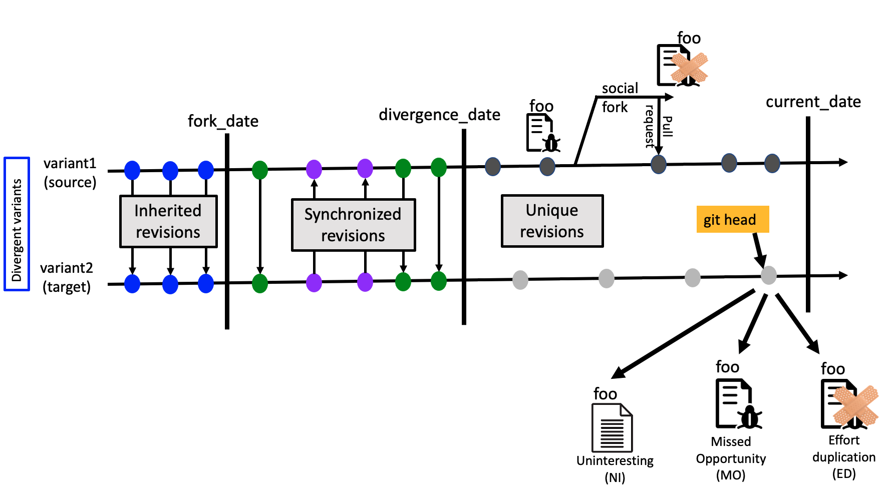
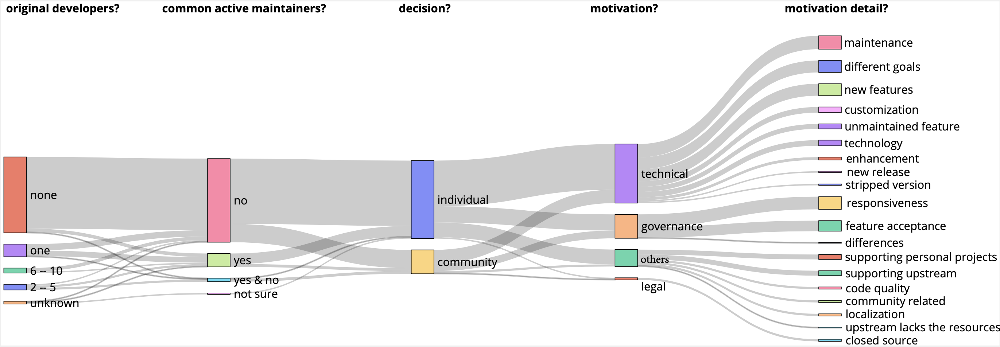
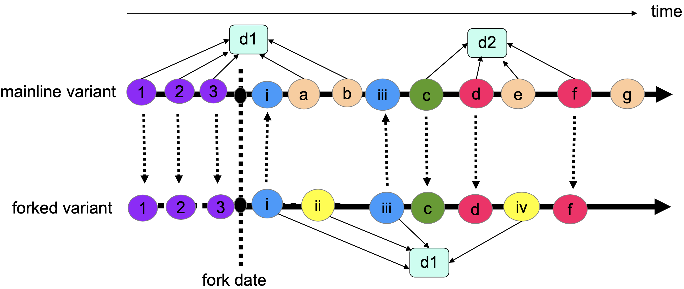
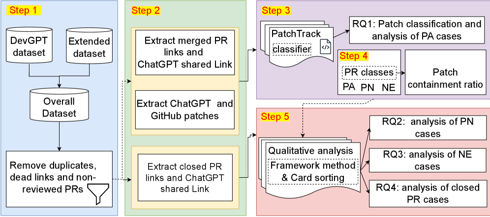
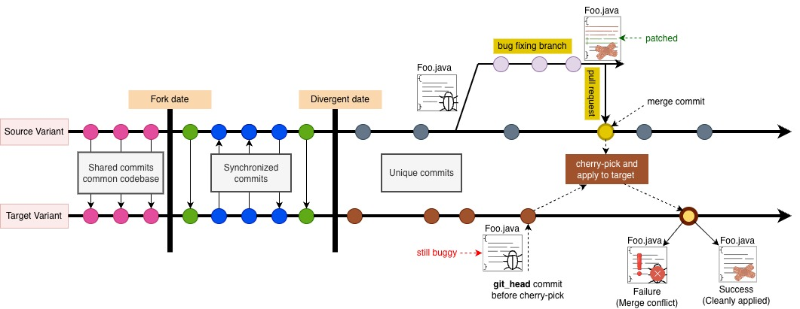
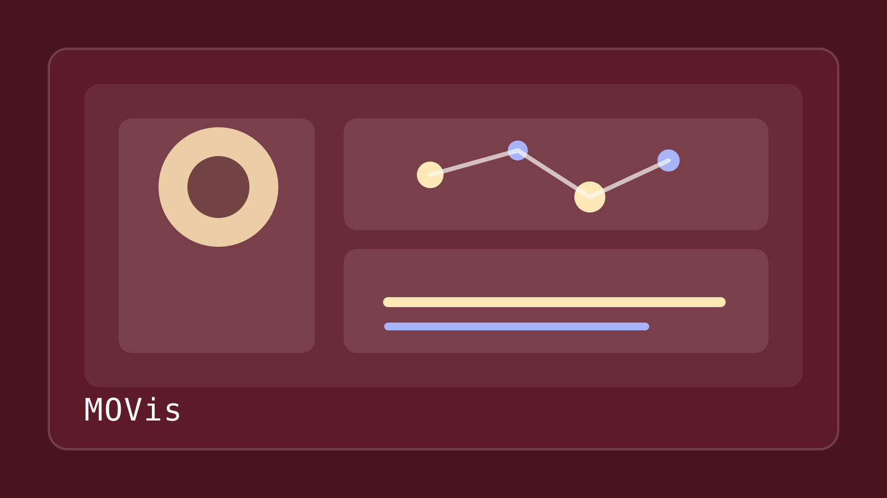

All projects
This page highlights all the ongoing and past EVOL Lab projects spanning software variants, empirical studies of fork maintenance, AI-assisted pull request analysis, and tooling for patch integration and visualization.

Patch reuse analysis
PaReco
A clone-detection tool for identifying missed opportunity patches and duplicated maintenance work across variant forks, backed by a large curated dataset.

Fork motivation study
Variant Forks: Motivations and Impediments
A qualitative investigation of why maintainers launch and sustain variant forks, covering technical, governance, legal, and community pressures.

Ecosystem mining
Reuse & Maintenance Practices among Divergent Forks
An empirical study of software families within Android, .NET, and JavaScript ecosystems, focusing on code propagation and maintenance behavior.

AI pull request analysis
PatchTrack
A tool and replication package for classifying whether ChatGPT-suggested patches were applied, skipped, or transformed during pull request integration.

Patch integration tool
RePatch
A refactoring-aware patch integration tool that transfers bug-fix commits across structurally divergent Java forks by inverting and replaying refactorings.

Visualization system
MOVis
An interactive visual analytics system for localizing missed patches across software variants, combining a Qt GUI with the PaReco backend.
Return to the home page for the shorter overview.
Back to selected projects